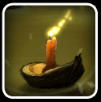

Somnium Orbis
ROCKSTAR GAMES - MULTIMEDIA DESIGN CATEGORY
GRAND JURY PRIZE WINNER
: "Somnium Orbis"
by Nate Horstmann & Peter Schmalfeldt
Exploring alternative ways to progress through an other-worldly scene.